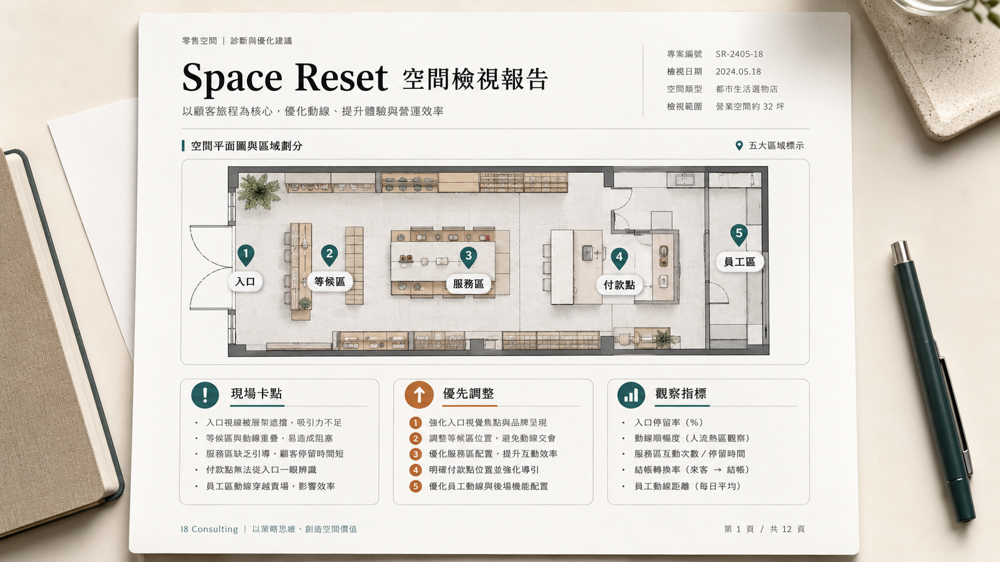

回到家沒有放鬆，反而更累
空間看起來正常，但人容易覺得悶、煩，睡不好，家人也比較容易吵。
先確認你是不是有感
人會洗澡，是為了洗掉疲累；空間也要整理，才留得住舒服的感覺。
有些空間不一定髒亂，卻會讓人覺得悶、累、卡。第一步不是急著改擺設，而是先看哪裡出問題。
空間看起來正常，但人容易覺得悶、煩，睡不好，家人也比較容易吵。
產品和服務都不差，但客人停不久，成交卡住，員工也容易累。
擺設、收納、動線都改過，但狀態沒有真的變輕，很快又回到原樣。
如果你已經想到某個位置，先別急著下結論。先看我們會怎麼檢查。
先看檢視方式重新看問題
空間卡住，通常不是單一原因。可能是動線、堆放物、使用習慣，或家人和團隊的壓力疊在一起。
所以我們不會一開始就叫你買長期方案。先找出卡住的位置，才知道下一步要整理哪裡。
檢視方式
我們會先看照片、平面圖和你的描述。先找出卡點，再決定要不要做後續支持。
用手機拍照，補一張平面圖或手繪圖，再寫下你最在意的問題。
先指出最需要處理的位置，再給你看得懂、做得到的任務。
你只要完成簡單任務。多數是整理、移物、拍照或觀察。
每 30 天整理一次變化，讓你知道這段時間發生了什麼。
怎麼判斷
正式檢測不是一句「我覺得」。我們會看資料，也會說清楚我們看到了什麼。
我們會看照片、平面圖、空間用途，還有你描述的狀況。
如果資料不夠，我們會請你補拍或補充，不會硬給答案。
第一步只做正式檢測。看完結果後，再決定要不要做 3 個月支持。
你會拿到診斷、任務和階段摘要，不是只收到一句「好了」。
你會拿到什麼
你會知道卡點在哪、先做什麼、每 30 天看到什麼，最後前後有什麼差別。
先列出接下來要看哪些地方，讓你知道不是模糊地「做調整」。
每 30 天整理一次狀態，告訴你目前看到什麼。
把一開始和 90 天後放在一起看，讓你看見差別。

服務入口
常見問題
因為每個空間卡住的位置不同。先檢測，才知道真正要看哪裡。
我們會看照片、平面圖和你的描述。資料不夠時，會請你補拍或補充。
你會收到支持主題、每 30 天的摘要，還有最後的前後對照。
不用。你要做的多半是整理、移物、拍照回傳，或做簡單觀察。
商業空間要多看入口、動線、收款區和員工區。看的範圍比較大，所以費用不同。
付款後，我們會先確認資料是否足夠。資料確認後 3 個工作天內，會回覆初步診斷。
先講清楚
Space Reset 做的是幫你看見空間裡讓人消耗、混亂或卡住的因素。它不是醫療、心理治療，也不是裝修設計。
我們會看真實回饋。哪些地方有效，哪些地方要補資料，都會一起整理。
60 秒空間自查
自查不是正式檢測。它只是幫你整理現況。正式檢測會再分析照片、平面圖和你的描述。
居家、店面、辦公室看的問題不同。
不用留資料。照最近一個月的感覺回答就好。
申請正式檢測時，可以把自查結果貼上。
自查做完後，下一段會說明正式檢測怎麼開始、要準備什麼。
看正式檢測方式正式檢測
第一步只做空間檢測。看完卡點和任務後，再決定要不要做 3 個月支持。
正式檢測會看照片、平面圖和你的描述。之後如果做 3 個月支持或年約，這筆檢測費會從後續費用中扣掉。
給想先了解支持節奏的人。也可以當作 3 個月方案的比較基準。
用 90 天來整理、觀察和對照。比單月累計 3 個月更划算。
適合做完 3 個月後，想把狀態穩定維持下來的人。
從正式檢測開始最穩。居家 NT$2,500，商業 NT$3,500。之後如果做 3 個月支持或年約，這筆檢測費會從後續費用中扣掉。
申請正式檢測艾伯林量子調頻｜Space Reset 空間檢測
填完資料後會進入付款頁。付款完成、資料確認後，就會排入檢測。